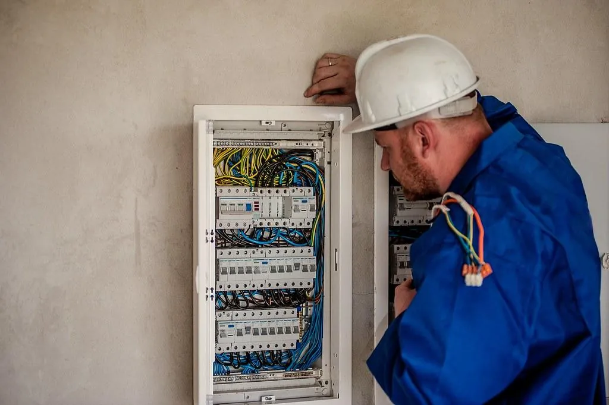
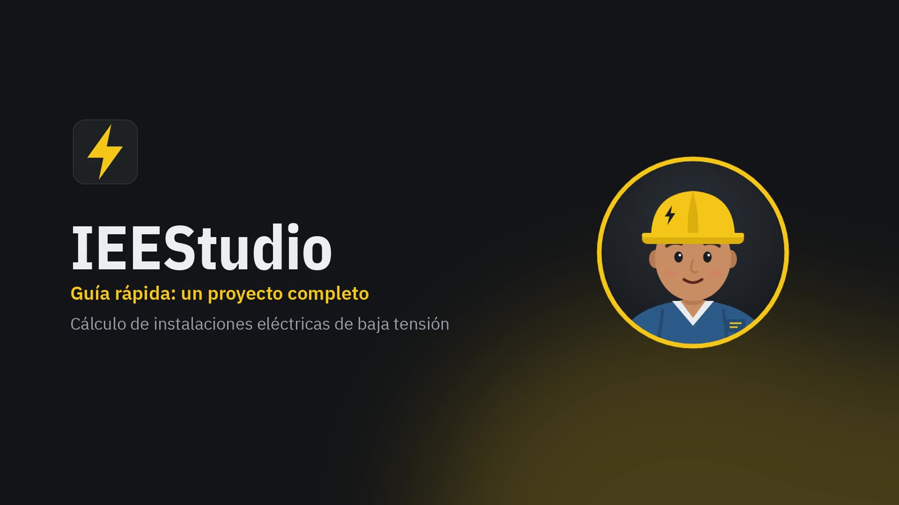
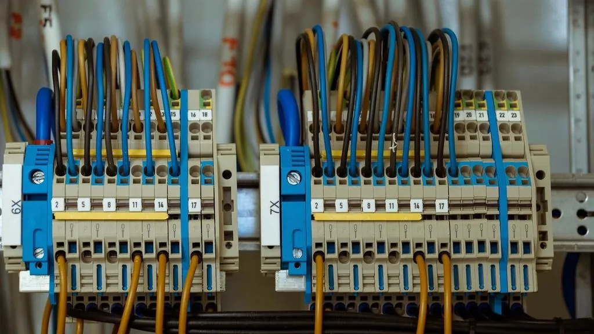

Código abierto
Puedes revisar cómo calcula cada número
El código, las tablas de la norma y los casos de prueba son públicos. El instalador y la versión en línea se compilan a la vista en GitHub.
IEEStudio calcula instalaciones eléctricas de baja tensión conforme a la NOM-001-SEDE-2012 y arma la memoria de cálculo con cada paso a la vista. Gratis y de código abierto.
Versión de prueba: revisa los resultados antes de usarlos en un proyecto.

ΔV = 2 · 13.12 · 0.0350 · (6.6 · 0.90 + 0.223 · 0.436) = 5.55 V
NOM-001-SEDE-2012: Capítulo 10, Tabla 9
0.68 + 4.37 = 5.05 %, límite 5.00 %


Para quién es
Ingenieros, contratistas y residentes de obra que preparan la memoria de cálculo de una instalación residencial, comercial o industrial en baja tensión.
Conoce IEEStudio

Qué calcula, cómo muestra el procedimiento y qué entrega: cuadro de cargas, unifilar y memoria.
Ver funciones
Un recorrido de pocos minutos por un proyecto completo, y la guía paso a paso.
Ver la guía
Úsalo en el navegador sin instalar nada o descarga el instalador para Windows.
Ver opciones
Código abierto
El código, las tablas de la norma y los casos de prueba son públicos. El instalador y la versión en línea se compilan a la vista en GitHub.
IEEStudio abre con un proyecto de ejemplo ya cargado: una casa habitación con su cuadro de cargas, su unifilar y su memoria.